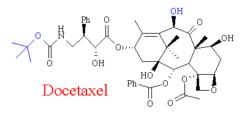

Docetaxel - the new taxoid

A promising alternative to Paclitaxel is Docetaxel (Taxotere®), a very similar chemical analogue. It was developed in the early 1980s by the French pharmaceutical firm Rhone-Poulene Rorer, who were researching the semi synthetic form of Paclitaxel at the time (see Semi Synthesis of Taxol). Indeed, Docetaxel is made in a very similar manner - being based on the same 10-deacetylbaccatin III (noncytotoxic) precursor, extracted from yew needles and stems. This core is then esterified with the addition of a sidechain in a similar manner to Paclitaxel. However it has shown to be over two and a half times as effective an anticancer agent as Paclitaxel, at equitoxic doses. Preclinical trials have shown in vitro activity against colon cancer and B16 melanoma. As a result of this work, phase I clinical studies were initiated in 1990.(6)
Docetaxel has a molecular weight of 808 g/mol-1 and like Paclitaxel, is almost insoluble in water. It is however freely soluble in a mixture of dimethylformamide, 95% v/v ethanol, 0.1 M sodium hydroxide and methanol. Both drugs consist of a 4-ring core linked to an ester sidechain, at position C13. The main structural differences are a deacylation at C10 and the functional group on the end of the sidechain.(11)
|
Paclitaxel |
Docetaxel |
[This needs the Chime plugin. The 3D molecule is active; left click on it, to move it around and right click to trigger a menu]
Suggestion - try changing to Display = Wireframe if you can't see the differance.
The biological effects of Docetaxel are pretty much identical to those of Paclitaxel - acting by stabilising microtubules. However, it’s greater effectiveness suggests that it’s bonding to the filament is stronger - it has a greater affinity for microtubules than Paclitaxel. In addition, trials have shown that those treated with Docetaxel have a significantly lower incidence of hypersensitivity (see Biological Effects) - a major problem with Paclitaxel, meaning that patients must take premeditation. However, like Paclitaxel this drug still has a serious toxicity problem.
Docetaxel is available from Rhone-Poulene Rorer as an investigational agent. The drug (80 mg) is dissolved in polysorbate 80.
 Next
Page: Synthesis of Taxol - from scratch
Next
Page: Synthesis of Taxol - from scratch